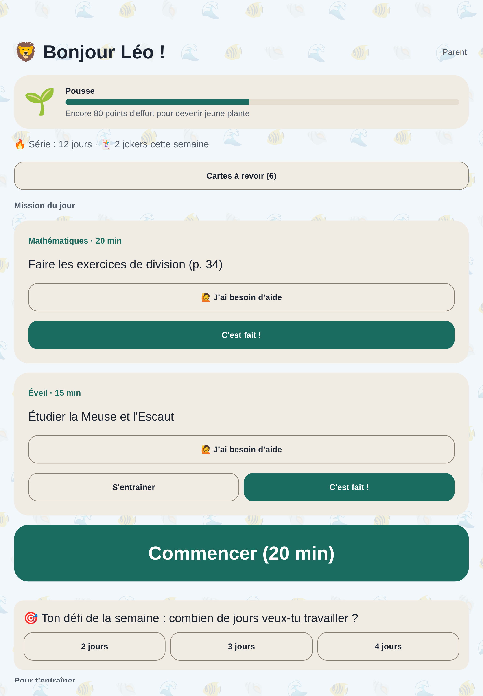
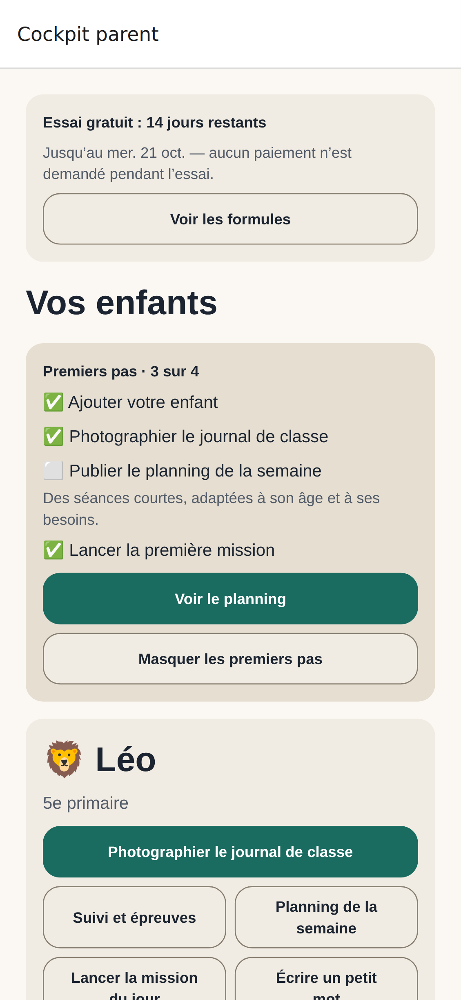
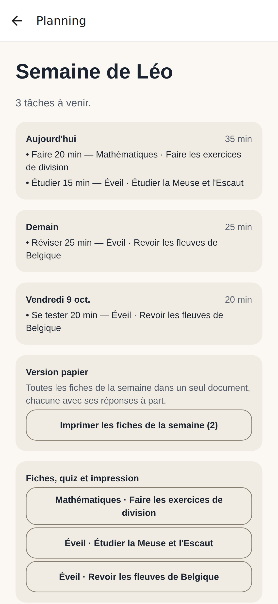
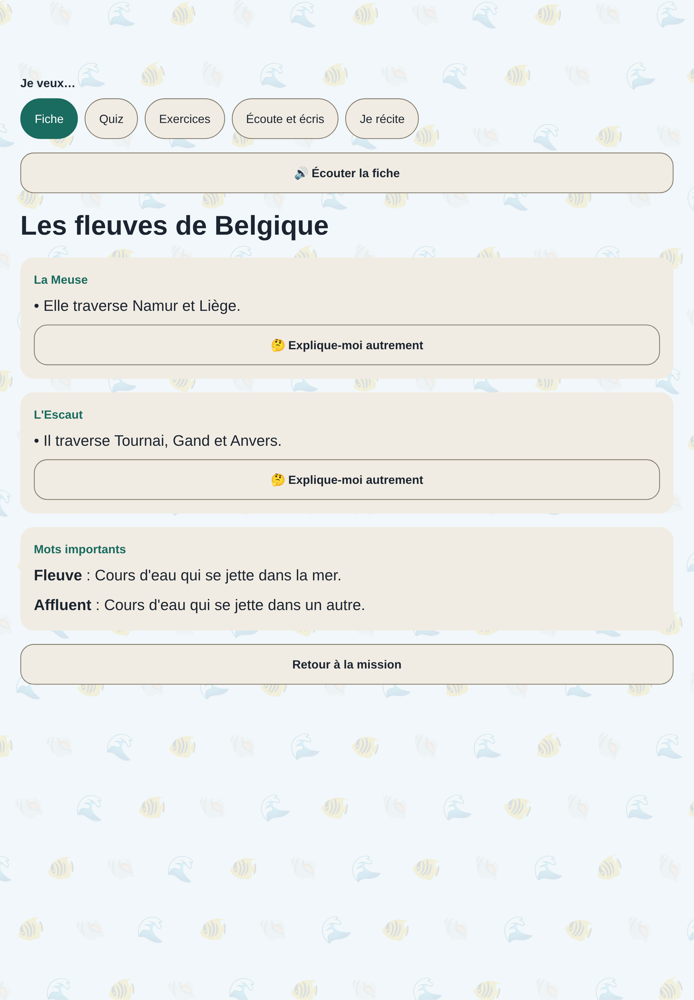
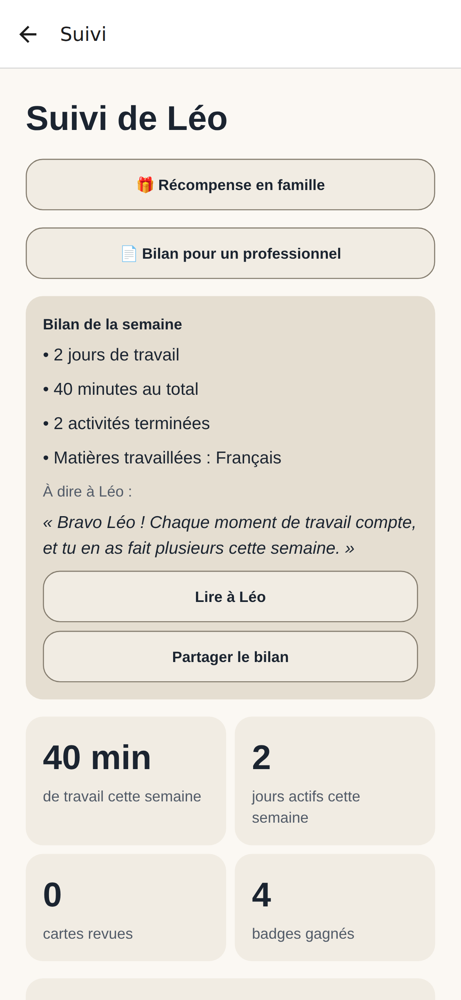
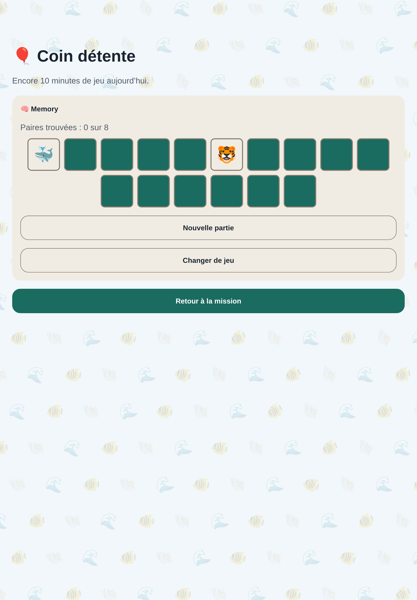

L’assistant scolaire des familles de la Fédération Wallonie-Bruxelles : le journal de classe devient un planning, des fiches et une mission du jour adaptée à chaque enfant, y compris avec un TDAH ou un trouble « dys ».

En bref
Le parent photographie le journal de classe. Côte à Côte en tire les devoirs et les échéances, les relie au programme officiel, puis prépare un planning de la semaine et une mission du jour courte, adaptée à l’âge et aux besoins de l’enfant.
Des partenaires pour tester avec des familles, valider les contenus, diffuser l’application et financer le lancement.
Le constat
« Qu’est-ce qu’il a pour demain ? Il a une interro vendredi ? Comment l’aider à réviser sans que ça finisse en dispute ? »
Le journal de classe, les feuilles volantes et les plateformes d’école dispersent l’information. Les échéances sont découvertes trop tard, souvent la veille.
Répartir le travail sur la semaine, préparer une interro, puis un blocus : les parents n’ont ni le temps ni la méthode, surtout avec plusieurs enfants.
Pour un enfant avec un TDAH ou un trouble « dys », une consigne trop longue ou une séance mal rythmée suffit à tout bloquer. Les outils grand public n’en tiennent pas compte.
Sources : bx1 (« Les écoles de la FWB ont perdu 30 000 élèves en dix ans », 2025) ; La Libre Belgique (« La facture cachée de la rentrée », juin 2026) ; APEDA ; publications belges sur la prévalence du TDAH et de la dyslexie. Le nombre de familles est une estimation à affiner.
La solution
Le journal de classe ou une page de cours. L’IA en extrait devoirs, leçons, interros et dates, sans recopier aucun nom. Le parent vérifie et valide.
Un planning de la semaine qui respecte les jours de travail, la durée adaptée à l’âge, les congés et les semaines chargées. Fiches, quiz et exercices sont préparés.
Sur sa tablette ou le téléphone du parent : la mission du jour, un minuteur, la fiche lue à voix haute, des cartes de révision, sans menu ni distraction.


Le produit
Planning hebdomadaire, alertes avant les interros, semaine allégée, congés FWB 2026-2027, cartable du soir, plan de blocus pour les examens, plusieurs parents par famille, tablette de l’enfant reliée par QR code.
Fiche, quiz, exercices et cartes pour chaque tâche, préparés selon le programme. « Explique-moi autrement », dictées, tables, lecture à voix haute qui progresse, langues lues avec la bonne voix, dossiers CEB, CE1D, CESS.
Réglages déduits du profil : séances plus courtes, une consigne à la fois, police adaptée, lecture vocale, pas de chrono. Météo du jour : un enfant fatigué fait l’essentiel. Pause respiration.
Avatar qui grandit avec l’effort, badges et diplômes, série avec jokers, récompense choisie en famille, défi de la fratrie sans classement, carnet de fierté, fonds d’écran selon l’âge, coin détente limité dans le temps.
Suivi par matière, bilan positif de la semaine à lire à l’enfant, demandes d’aide signalées, « Ce soir à table » pour en parler, bilan PDF pour un logopède, le PMS ou l’enseignant.
Prénom seulement pour l’enfant, jamais transmis à l’IA, aucun nom recopié des photos, photos supprimées sous 24 h, hébergement UE, export et suppression des données, besoins particuliers jamais transmis tels quels à l’IA.



Positionnement
Pour les parents de la Fédération Wallonie-Bruxelles qui veulent accompagner leurs enfants sans y passer leurs soirées, Côte à Côte transforme le journal de classe en un plan de travail adapté à chaque enfant. Contrairement aux applications de révision ou aux assistants IA généralistes, il suit le programme officiel, s’adapte aux troubles d’apprentissage et laisse toujours le dernier mot au parent.
| Plateformes d’école | Apps de révision | Assistants IA généralistes | Cours particuliers | Côte à Côte | |
|---|---|---|---|---|---|
| Organise la semaine de l’enfant | partiel | — | — | partiel | ✓ |
| Aligné sur le programme FWB | ✓ | — | partiel | ✓ | ✓ |
| Adapté au TDAH et aux « dys » | — | partiel | — | partiel | ✓ |
| Exercices sur ce que l’enfant étudie cette semaine | — | partiel | partiel | ✓ | ✓ |
| Le parent valide et suit | partiel | — | — | partiel | ✓ |
| Conçu pour un mineur (vie privée, sans pub) | ✓ | partiel | — | ✓ | ✓ |
| Coût mensuel pour la famille | gratuit (école) | 0 à 10 € | 0 à 20 € | 80 à 200 € | 10 à 15 € |
✓ oui · partiel : en partie ou selon l’offre · — non. Comparaison par catégories, à titre indicatif : plateformes numériques d’école (journal de classe, communication), applications de cartes et de quiz, assistants conversationnels, soutien scolaire à domicile.
Nous ne remplaçons ni l’enseignant ni la plateforme d’école : nous aidons la famille à faire, à la maison, ce que l’école demande.
Logopèdes et centres PMS reçoivent un bilan factuel du travail à la maison ; l’application applique au quotidien les adaptations recommandées.
Le prix d’une heure de cours particulier par mois pour un accompagnement quotidien de toute la famille.
Partenariats
Ligue des familles, associations de parents d’élèves, associations « dys » et TDAH.
Ensemble : familles pour la bêta, retours d’usage, tarif réduit pour les membres, ateliers « s’organiser à la maison ».
Ceux qui recommandent des adaptations aux familles.
Ensemble : validation des adaptations, bilan pour le professionnel co-construit, recommandation aux patients, accès offert aux praticiens.
Souvent engagées auprès des familles : avantages pour la logopédie, le soutien scolaire, la prévention.
Ensemble : avantage membre (abonnement offert ou remboursé), prévention du décrochage, données d’usage anonymes et agrégées.
Contenus alignés sur les référentiels du tronc commun.
Ensemble : contenus relus ou fournis par des enseignants, exercices d’éditeur dans les fiches, co-marquage.
Pour les familles qui ont le moins de temps et de moyens.
Ensemble : licences pour des familles accompagnées, projet pilote dans une école ou une école de devoirs, mesure d’impact.
Fondations, programmes régionaux d’innovation, investisseurs à impact.
Ensemble : financement de la bêta et des contenus validés, accompagnement au lancement, réseau.
Pas de publicité, pas de revente de données ; seules des statistiques anonymes et agrégées sont partagées. Contenus signalables et corrigés rapidement. Transparence sur l’usage de l’IA. Gouvernance pédagogique ouverte aux professionnels.
Feuille de route
| Étape | Objectif | Contenu |
|---|---|---|
| Produit fonctionnel fait | octobre 2026 | Numérisation et extraction par l’IA, planning, mission du jour, fiches, quiz, exercices, cartes, dossiers CEB, CE1D et CESS, maternelle, tablette de l’enfant, récompenses, suivi, bilans, abonnement, sécurité et protection des données. Démonstration complète sur ordinateur, iPhone et iPad. |
| Mise en conformité | fin 2026 | Analyse d’impact (AIPD) et politique de confidentialité relues par un juriste, mentions légales, comptes Apple, Google et hébergement de production en UE. |
| Bêta privée | hiver 2026-2027 | 10 à 20 familles (dont des enfants avec TDAH et « dys ») via TestFlight et le test interne Google Play. Mesures : usage quotidien, coût réel de l’IA, qualité des contenus, satisfaction. |
| Lancement public | printemps 2027 | Publication sur l’App Store et Google Play, offre partenaires, parrainage. Préparation du CEB et du CE1D de juin comme temps fort. |
| Approfondissement | 2027-2028 | Contenus relus par des enseignants et logopèdes, programmes des réseaux, version web du cockpit parent, interface parent multilingue. |
| Risque | Réponse |
|---|---|
| Erreurs dans les contenus générés | Génération ancrée sur le programme et la page photographiée, validation par le parent, signalement en un geste, relecture humaine progressive. |
| Écriture manuscrite mal lue | Chaque tâche extraite est vérifiée par le parent avant d’arriver chez l’enfant. |
| Données de santé de mineurs | Prénom seulement et jamais ajouté aux requêtes IA, photos supprimées dès la lecture, besoins jamais transmis tels quels à l’IA, hébergement UE, AIPD et DPA avant le lancement. |
| Coût de l’IA | Quotas par formule, fiches réutilisées, suivi du coût réel par famille dès la bêta. |
| Équipe réduite | Services gérés, 55 parcours testés automatiquement à chaque modification, partenaires pour les contenus et la diffusion. |
Nous cherchons des partenaires pour la bêta, la validation des contenus, la diffusion auprès des familles et le financement du lancement.
Une démonstration en 20 minutes
L’application tourne sur ordinateur, iPhone et iPad, avec un compte de démonstration : cockpit parent, console de l’enfant, tablette reliée.
Contact
Claudio Dellutri, fondateur